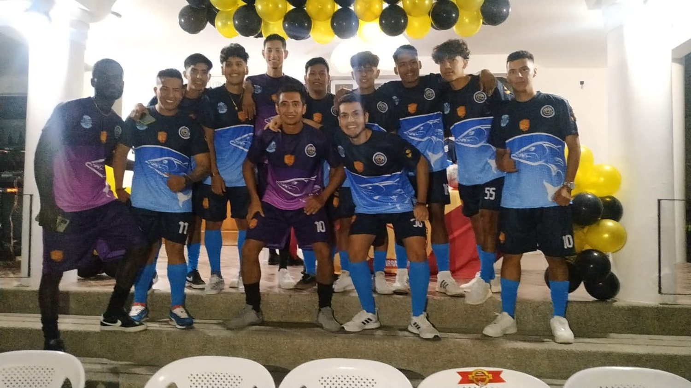
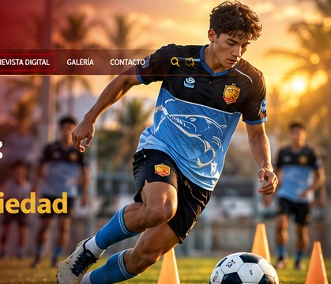
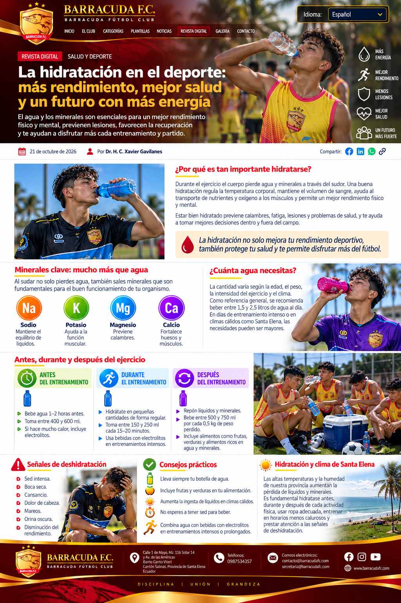
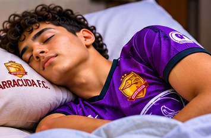

Identidad institucional
Barracuda F.C.: mucho más que fútbol
Nuestra visión de un club que acompaña el crecimiento deportivo y humano.
Leer artículo
Un espacio para reflexionar sobre el fútbol, la formación integral, los valores y las oportunidades que construimos para las nuevas generaciones.
En Barracuda F.C. creemos que el deporte también educa, inspira y transforma vidas. Reunimos aquí nuestras publicaciones de reflexión y formación humana y deportiva, conservando sus páginas originales.

Nuestra visión de un club que acompaña el crecimiento deportivo y humano.
Leer artículo
La importancia de la actividad física para el bienestar y el desarrollo integral.
Leer artículo
Hábitos esenciales para el cuidado de los deportistas.
Leer artículo
Nutrición y hábitos para el desarrollo deportivo.
Leer artículo
La recuperación como parte fundamental del entrenamiento.
Leer artículo